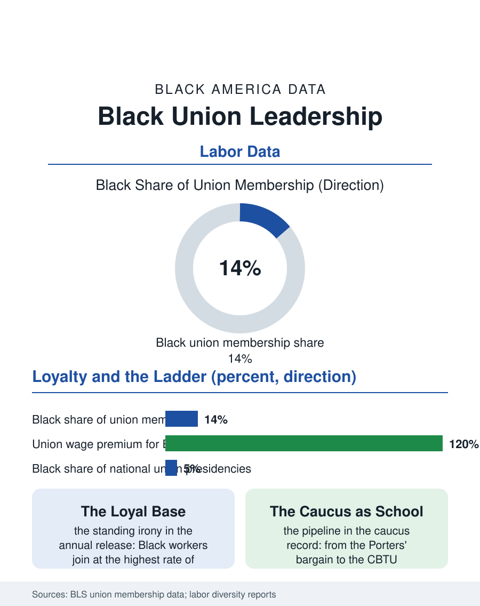

Black Employment
The Loyal Base: Black Workers and Union Leadership
The highest joining rate and the largest wage premium, a presidency count on a short list: the movement's own funnel. The union leadership file.

The labor movement's leadership is the file where the movement audits itself: Black union members constitute roughly a seventh of organized labor's ranks, a share above the workforce's, while the presidency and executive tiers of the national unions and the federation post Black shares the movement's own reporting places well below the membership's, a funnel the labor file has tracked since the federation's founding exclusions. This article reads the union leadership file.
The Membership and the Masthead
The membership data give the file its base and its standing irony: Black workers join unions at the highest rate of any demographic group in the Bureau of Labor Statistics' annual release, their density running above the white figure in every modern year, so that the movement's most loyal constituency is the Black working class, a loyalty the organizing data explain by the wage premium's distribution, the union differential being largest for the Black worker in the economists' decompositions. The leadership census, assembled by the movement's critics and its own diversity reports from the locals to the internationals, shows the ascent's narrowing: the shop steward and the local officer tiers reflecting the membership's composition in the integrated locals, the national staff and the executive boards thinning, the international presidencies countable in the movement's history on a short list whose brevity is the file's headline. The federation's own summit recorded its landmark in the recent era with the elevation of its first Black president of a major national union to the federation's top office's succession line, an event the labor press covered as the barrier's formal breach and the file records with the count still open beneath it. The staff director's tier, the professionals who run the internationals' departments between the conventions, deserves the file's line as the leadership's farm system, its Black share in the movement's reports running fuller than the elected tiers' and its alumni supplying the recent presidencies' several, a pattern the file reads as the funnel's forecast.
Caucuses and the Long Argument
The internal file is the caucus's: the Black labor organizations within the movement, from the Brotherhood of Sleeping Car Porters' founding bargain, the first Black union chartered into the federation's house on its own terms, through the Coalition of Black Trade Unionists of the civil rights era and its successor formations, have functioned as the leadership pipeline and the conscience in one, their conventions being where the movement's Black officers are made visible to each other and to the internationals' nominating processes. The historical argument the file carries is the movement's double record, stated in the porters' own terms a century ago: the house of labor was built with Black hands and its door was guarded against them, and the leadership file is the door's current measurement. The organizing frontier's demographics write the file's future: the new organizing of the current era, in the service and logistics and public sectors of the employment files, is substantially Black-led at the committee level in the campaigns' own accounts, the warehouse and the coffee chain and the university campaigns producing a generation of Black organizers whose ascent the leadership census of the next decade will record, for or against the funnel's persistence.
The Premium's Keepers
The union leadership file closes on the premium's politics, because the leadership's composition decides the movement's agenda in the concrete: the contracts' priorities, the organizing map's targets, the political endorsements' terms, and the Black membership's standing demands, the public sector's defense, the service sector's standards, the voting file's protection, have risen in the movement's program in proportion to the leadership's change, a causality the historians of the porters' era established and the current federation's program confirms. The bureau counts the members each January. The file's last entry is the convention's podium in the movement's own hall, the gavel in the hand the membership's loyalty finally placed there after a century of the door's measurements, and the file's question, which the next census of officers will answer, is whether the podium was the funnel's end or its exception, a question the organizing generation now rising through the locals is entitled, on its numbers, to answer itself. The gavel's echo is the census's next count.
More in Black Employment
The Black Unemployment Rate: The Two-to-One Pattern
Black unemployment runs at roughly twice the White rate — 5.5 percent against 3.3 percent in annual averages — a ratio stable across five decades of federal data. How it is measured and why it persists.
Black Median Weekly Earnings: The 80-Cent Ratio
Black full-time workers earn a median of about $900 a week — roughly 80 cents for every dollar White workers earn. The BLS earnings data by group, gender, and occupation.
Black Labor Force Participation: Working at National Rates
Black labor force participation runs at roughly the national rate — and Black women participate at higher rates than White women. The BLS participation data.
Source: Bureau of Labor Statistics, Union Members annual release; Coalition of Black Trade Unionists and labor movement diversity reporting.